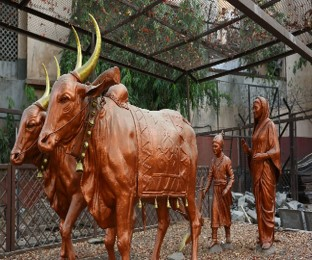
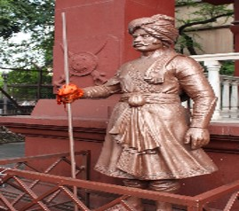

In the year 1630 AD, Shivaji Maharaj's Father Shahaji Raje Bhosale, established the Lal Mahal for his wife Jijabai and son. Shivaji Maharaj stayed here for several years until he captured his first fort. The current Lal Mahal is a reconstruction of the original and located in the center of the Pune city. The original Lal Mahal was built with the idea of rejuvenating the recently razed city of Pune when Shahaji Raje entered the city along with Shivaji Maharaj and his mother, Maasaheb Jijabai. Young Shivaji grew up here, and stayed in the Lal Mahal till he captured the Torna fort in 1645. Chhatrapati Shivaji Maharaj's marriage with his first wife, Saibai took place in Lal Mahal on 16 May 1640. The Lal Mahal is also famous for an encounter between Shivaji Maharaj and Shaista Khan where Shivaji Maharaj cut off the latter's fingers when he was trying to escape from the window of the Lal Mahal. This was part of a surreptitious guerrilla attack on the massive and entrenched Mughal Army that had camped in Pune, with Shaista occupying (possibly symbolically) Shivaji Maharaj's childhood home. As a punishment for the ignominy of the defeat despite superior numbers and better armed and fed soldiers, Shaista was transferred by the Mughal Emperor to Bengal.
Timing: 9am–1pm, 4–8pm for whole week

